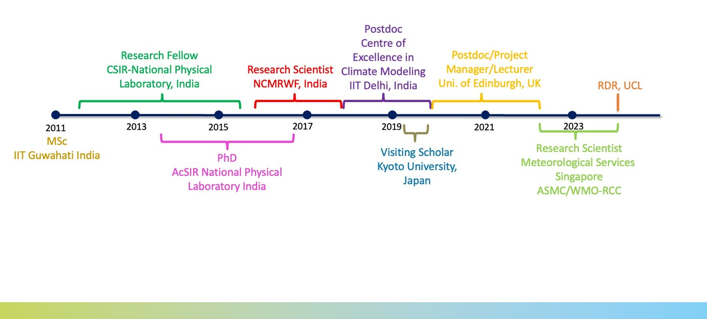

What I did before
I am a physicist by training and started my scientific career with a B.Sc. Honours in Physics, followed by an M.Sc Honours in Physics in 2011, with a specialization in condensed matter physics. However, somehow, I ended up working for a research project on the transport of water vapor in the atmosphere at the National Physical Laboratory, India, which eventually led to a PhD on the same topic.
After submitting my PhD thesis in 2015, I joined an operational research center (National Centre of Medium Range Weather Forecasting, NCMRWF) in India. At NCMRWF, I continued research on my PhD topic but also started exploring the area of long-range predictions and climate variability as a sidekick. I worked at NCMRWF for ~2 years from 2015–2017 and also finished my PhD and graduated in 2016 while working there.
In 2017, I moved to an academic institution (Indian Institute of Technology (IIT) Delhi, India), where I worked on the regional impacts of climate change. While working at IIT Delhi, I also visited Kyoto University, Japan, and worked on the impacts of including interactive stratospheric chemistry in models on climate sensitivity.
After living through 30 Indian summers, I moved to the University of Edinburgh (UoE), UK in 2019. At the UoE, I continued in the area of long-range predictions and climate change. Later, I worked on two different projects on indoor–outdoor air quality and health in the UK, one of which was with a private company (Cambridge Environmental Research Consultants Ltd, UK). I also taught the Natural Hazards course at the UoE for two semesters between 2020–2021.
In March 2022, I moved back to the tropics and joined the Centre of Climate Research Singapore (CCRS). At the CCRS, I led the development of the Indian Ocean Dipole (IOD) Warning System. I worked for the ASEAN Specialized Meteorological Centre (ASMC) and Southeast Asia Regional Climate Centre (SEA-RCC) Network, where I contributed to the development and delivery of climate services for Southeast Asia. I also provided research support for Singapore's third national climate change study (V3) and the ASEAN Coordinating Centre for Humanitarian Assistance on disaster management.
What I do now
In January 2024, I moved to the Department of Risk and Disaster Reduction at University College London (UCL). At UCL, I teach and mentor under/postgraduate students and conduct research in the area of weather and climate extreme events. Currently, I serve as the Vice-Chair of the United Nations' (UN) World Meteorological Organization (WMO) World Weather Research Programme. I am also a Coordinating Lead Author of the Intergovernmental Panel on Climate Change (IPCC) Working Group I Assessment Report (AR7), Fellow of the Royal Meteorological Society, and Fellow of the Higher Education Academy in the UK.
Other things I do or did
In 2013, I did a short stint for an art magazine (Scene360 Illusion), where my job was to find exciting and unconventional art forms and write short news articles on those pieces and artists. It was similar to what we do for scientific literature reviews. Perhaps in a parallel universe, I would have continued in this area.
Lately, I have been drawn to the philosophical side of science, particularly toward the process and purpose of research. I like hearing about the research experiences and journeys of others, and sometimes reflecting on my own. Occasionally, these thoughts and conversations take the form of written words and become stories, but that doesn't happen as often as I would like.
I am passionate about facilitating better working environments for early-mid career researchers. This interest has led to my very long and deep engagement with the YESS community. I am also an active member of the climate science community and led several initiatives in the area of climate research (see here).
The places in between
I was never much of a traveler, but my work has taken me to places I would have never visited otherwise. Not all below were for work, but most were — and I wouldn't have seen several of them without it. In many ways, it let me see the world — from Kyoto to Edinburgh, to Atacama and beyond. You can wander through some of those moments in my photo galleries.